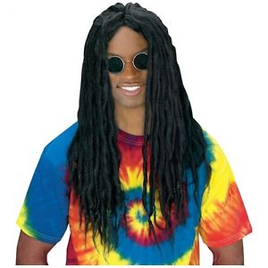

Basic Website Layout & Styling
BackQuerying the DOM
The DOM can be queried using the .querySelector method. This takes a arbitrary CSS selector as an arguement. If multiple elements fit the selector, the first matching element will be returned.
const myElement = document.querySelector('div.myElement')
If we want to get a collection of matches, we can use:
const myElement = document.querySelectorAll('div.myElement')
This will return a nodeList, not an Array of elements.
If you already have reference to a parent element, you can query that element isntead of the whole document.
parentElement.querySelector('.childElement')
Working with NodeLists
As mentioned earlier, .querySelectorAll returns a nodeList, not an Array. Therefore standard array functions wont work on this data. We can convert it to an array with either of these methods:
ES6
const elementsArray = Array.from(myElements)
Pre-ES6
Array.prototype.forEach.call(myElements, doSomethingWithEachElement)
[].forEach.call(myElements, doSomethingWithEachElement)
Modifying the DOM
We can move, create and delete elements using JavaScript:
element1.appendChild(element2)
element1.insertBefore(element2, element3)
myParentElement.removeChild(myElement)
const myNewElement = document.createElement('div')
const myNewTextNode = document.createTextNode('some text')Modifying Elements
Classes & Attributes
Modifying classes can be done using the .classList:
myElement.classList.add("foo");
myElement.classList.remove("foo");
myElement.classList.toggle("foo");
myElement.classList.toggle("foo", toggleBoolean);
Modifying attributes can be done using .getAttribute and .setAttribute:
var elementAttribute = myElement.getAttribute("any-attribute")
var elementHasAttributeBoolean = myElement.hasAttribute("any-attribute")
myElement.removeAttribute("any-attribute")
myElement.setAttribute("any-attribute", value)
Styling
CSS styles can be individually modified using JavaScript as well:
myElement.style.marginLeft = '2em'
Viewport tags
Viewport meta tags are used to control how a viewport behaves on different browsers. A typical example would be:
<meta name="viewport" content="width=device-width, initial-scale=1">
Width property controls the size of the viewport. This can be set as pixels or with a special value (device-width is a special value).
If the viewport is zoomed in to display the top left of the page, then the viewport has been set to a fixed pixel width. If you see the entire width of the page, but it is zoomed out, then the viewport has been set to device-width.
Initial Scale property controls the zoom level when the page is first loaded. The attribute initial-scale=1 instructs browsers to establish a 1:1 relationship between CSS pixels and device-independent pixels. If you set the viewport to be the width of the device you don't need to zoom in to see the web page. To make sure that you web page isn't zoomed in when initially displayed you can use a property initial-scale to set the default zoom. There are also 'maximum-scale', 'minimum-scale' and 'user-scalable' properties which control how users are allowed to zoom.
Document type declaration
The declaration must be the first item in you HTML document. It isn't a HTML tag, but rather an instruction to the web browser about what type and version of document/HTML to expect. The common DOCTYPE declaration for HTML5 is:
<!DOCTYPE html>
CSS Grid
Grid Container The direct parent element
To set the grid container, apply display: grid | inline-grid | subgrid; CSS property.
grid-template-columns / grid-template-rows
Defines the columns and row sizes of the grid. Can use pixels, percentages, auto or fr units.
.container {
grid-template-columns: 40px 50px auto 50px 40px;
grid-template-rows: 25% 100px auto;
}If you want, you can set explicit names for each row and column.
.container {
grid-template-columns: [first] 40px [line2] 50px [line3] auto [col4-start] 50px [five] 40px [end];
grid-template-rows: [row1-start] 25% [row1-end] 100px [third-line] auto [last-line];
}
The fr unit allows you to set the size as a fraction of free space. This example will equally set the space to one third for each column.
.container {
grid-template-columns: 1fr 1fr 1fr;
}
.container {
grid-template-columns: 1fr 50px 1fr 1fr; //This calculates the free space after the 50px.
}Flexbox
TODO from work
Media queries can be used in CSS to apply different styles depending on the device and browser you are using to view the document. Read more on MDN.
Media Types
Media queries dont have to be only used for targetting screens, but can also target other devices such as printers. For example I can do:
@media print { ... } or @media print, screen { ... }
Possible media queries include:
- all Suitable for all devices
- print inteded for documents viewed on a screen in print preview mode
- screen intended just for screens
- speech intended for speech synthesisers
Media Features
Media features describe specific characteristics of a user agent. For example, you can apply styles to only widescreen monitors, computers that use mice, or devices being used in low-light conditions. They can be range features, meaning they have a max and min condition.
@media (max-width: 1200px) { ... }
This media query will apply the styles in the block if your browsers viewport is equal to, or less than 1200px wide. A full list of media features can be found here.
If you create a media feature without a specified value, the styles will be used as long as the feature's value isn't 0. For example:
@media (color) { ... }
This media query will be applied to any device with a colour screen.
Complex Media Queries
You can use the logical operators not, and and only when building media queries to combine multiple features and types.
AND
@media (min-width: 30em) and (orientation: landscape) { … }
@media screen and (min-width:30em) and (orientation: landscape) { … }NOT
@media (not screen) and (min-width:30em) { … }
@media not (screen and (min-width:30em)) { … }ONLY
The only keyword prevents older browsers that do not support media queries with media features from applying the given styles. It has no effect on modern browsers.
Comma-separated list
Comma-seperated lists are used like an OR operator. The user's device can match any one of the various media types/features/states. For example:
@media (min-height: 680px), screen and (orientation: portrait) { ... }
This media query applies the styles if the user's device has a minimum height of 680px OR is a screen device in portrait mode.
<video> tag
The video tag allows you to embed a video easily. Example usage:
<video src="porn.webm" controls>
<source src="porn.webm" type="video/webm">
<source src="porn.mp4" type="video/mp4">
<p>Your browser doesnt support HTML5 video. Here is a <a href="porn.webm">link to the video</a> instead.</p>
</video>
The controls attribute is omitted when you want to hide the video players controls. This is not recommended as epiletic users need to be able to pause videos.
Different browsers support different video (and audio) formats. This is because audio and video formats are patented and the browsers have to pay money to use them. Formats like MP3, MP4 and WebM are called container formats. These contain different parts of that make up the whole song or video (for example; audio track and video track).
- A webM container packages Ogg Vorbis audio, with VP8/VP9 video.
- A MP4 container packages AAC or MP3 audio with H.264 video
Browsers use codecs to convert the compressed sound and video into playable data.
Other attributes you can add to your video tag include:
- Controls - if present, show controls
- Autoplay - if present, autoplay
- Loop - if present, loop
- Muted - if present, mute the video
- Poster="linktoimage.jpg" - if present, use this image as the pause screen
- Width="400" - Width of element
- Height="400" - Height of element
Subtitles
Subtitles are important from an accessibility point of view. Most users cant be expected to have headphones or be able to hear the audio from the video. WebVTT is a format for writing text files containing strings with metadata. These text strings are called cues. This format can be used for captions, subtitles or timed descriptions. To add it to your video, you just need to add it as a child, like you would do with a source. The tag you use is:
<track kind="subtitles" src="subtitles.vtt" srclang="en">
For more information on subtitles, check out MDN.
<audio> tag
The audio tag works similar to the video tag, but with some small differences.
- Cant use width and height attributes, because there is no visual component.
- It doesnt support the poster attribute, because there is no visual component.
Raster optimisation
- Prefer a vector format if you can
- Pick the best raster image format (JPG, PNG etc). If you have transparancy, pick PNG. If transparency isn't required, pick jpg.
- Reduce the bit-depth, which is the amount of colours per channel.
- Use delta-encoding, which figures out difference between one pixel and its adjacent pixel. Then it uses the difference instead of a unique colour value.
- Reduce the overall dimensions of your image to the appropiate size for its application.
- Remove unnecessary metadata
Vector optimisation
- Remove meta-data and run through a SVG optimisation tool
- GZIP it, if your server supports GZIP.
Optimisation tools recommended for SVGs are SVGO, or with the GUI: SVGOMG.
Other tools
- imagemagick - Server side optimisation of images
- jpegtran - Image optimisation for jpegs
- Gifsicle - Image optimisation for gifs
- optipng - Lossless image optimisation for PNGs
- riot - Image optimisation for many formats
- PageSpeed Insights - Google page insights to identify images which could be optimised.
Selecting image format

Lossless vs Lossy Compression
For certain types of data, it is crucial that the compressor does not alter or loose original information. In images, audio and video, it may be acceptable to deliver an "approximate" representation. Typically, the image optimisation pipeline consists of two high level steps:
- Lossy filter that eliminates pixel data
- Lossless filter that compresses pixel data
Sometimes a browser can send a touch and a mouse event from a single input. When a browser does this, it will send a touchstart event before any mouse events. If an application doesn't want mouse events to be fired with touch, handlers can call preventDefault(). The event order is as follows:
- touchstart
- None, or some touchmove events
- touchend
- mousemove
- mousedown
- mouseup
- click
Learn more about touch events with MDN.